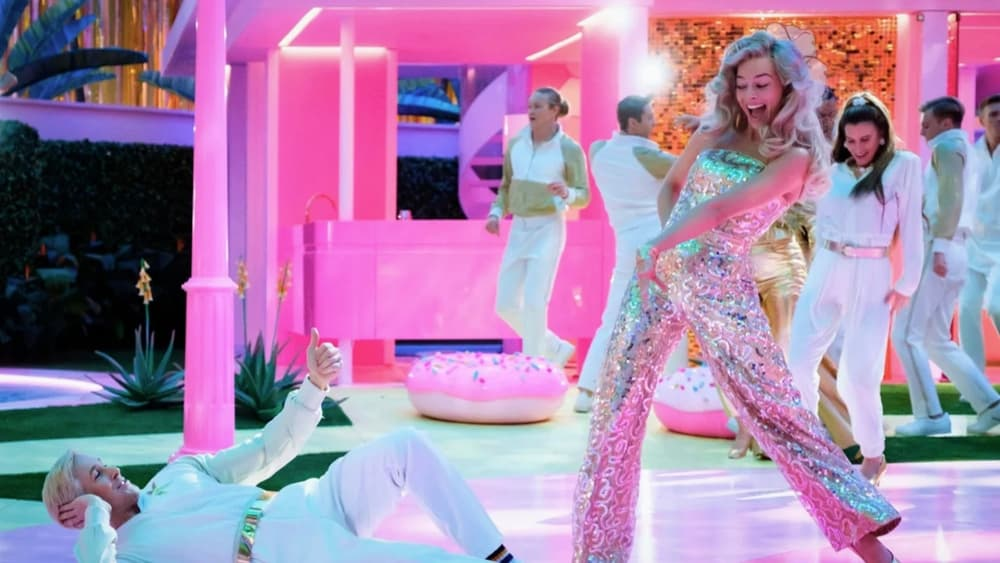

-
'Barbie''s overdone ideas and status as corporate product overwhelm its fun kitsch
by Mitchel Green - July 27, 2023
|
mitchelgreen34@gmail.com

source: The Movie Database
“What Was I Made For?” sings Billie Eilish in a song that plays during a pivotal moment toward the end of Greta Gerwig’s new film “Barbie.” While the question is posed as a search for meaning in a world where your identity is factory-made, the film could ask itself the same question. What was it made for? Well, money, obviously, so I guess the more interesting question is who was this movie made for? Certainly not children, who will understand as much of its feminist progressive politics as they would the labor politics in the “SpongeBob SquarePants” episode “Squid on Strike” and will get next to nothing out of its hyper-specific pop culture references. Nor is it really for adults, with its extremely soft PG-13 rating allowing for slightly risque jokes but its existence as corporate product holding it back from making any meaningful social commentary. The film tries to be for everyone, but it does so by targeting young and old audiences individually rather than finding something that all will enjoy.
Perhaps wanting something more complex and adult is asking for too much from a film based on a children’s toy. Still, the talent behind and in front of the camera suggested that audiences should have expected more. In her third solo directorial effort, Gerwig ditches her smaller, more intimate independent background to continue on her quest to become a major Hollywood studio filmmaker. To her credit, she makes better use of that big studio IP movie budget than most other directors in the indie cinema to Hollywood pipeline. Though nothing out of the ordinary in the grand scheme of film history, it’s refreshing to see Barbieland constructed with such tactile, vibrant production design amid a blockbuster landscape overrun with environments that look and feel like they were shot in an Atlanta parking lot and created in a computer — which, to be fair, most of them are.
Gerwig proves she can excel at scale — a talent we have only seen hints of before with her sweeping camera movements and grand narrative structure in “Little Women”, but she shines when given the resources to go all out on a technical level. The lavish dance numbers are the highlight of “Barbie”’s spectacle, with its combination of glitzy production design and impressive choreography making you wish Gerwig had just made this into a full-on musical in the vein of the classics she takes inspiration from. Less surprising is her handling of the enormous ensemble cast, featuring nearly every major celebrity that didn’t find their way into Christopher Nolan’s “Oppenheimer.” Despite the overwhelming number of characters, the script and performances work in tandem to give each Barbie, Ken, and nameless Mattel executive distinct personalities and desires.
But the film’s surface-level pleasures — and there are plenty — are not enough to cover for “Barbie”’s glaring flaws, the most aggravating being that this film is an ad. It recalls the Ben Affleck film “Air” from earlier this year, a Nike advertisement disguised as a story about executives defying the odds to sign the greatest basketball player of all time to a shoe deal and make themselves more money than they will ever need. But at least “Air” was completely earnest in its portrayal of corporate mythology, “Barbie” instead takes the same route as self-aware commercials that acknowledge how embarrassing it is that their sole purpose is to sell something to you. Gerwig’s naturally earnest writing comes through in other areas of the film, but anything dealing with the Mattel executives is too soft on its parent corporation, failing to satirize the idea of Barbie as product with any bite whatsoever because that would undermine Mattel’s goal of selling Barbie to you.
One could overlook this if the film was more original in content, but it feels as staid as any contemporary major studio release. It is original in that we have never seen this story, these themes, and these arguments in this context before — that is, IP-driven, corporate Hollywood slop — but none of those things are original outside of that context. Its second-wave feminist ideas are valid, but would barely be considered revolutionary in a movie made 50 years ago. Its core concept has been tackled in media as varied as “The Matrix” and “The Lego Movie.” When the jokes get too broad, it feels at best like a good joke that you’ve heard too many times for it to move you anymore — “2001: A Space Odyssey” parodies are well beyond played out by this point, but at least “Barbie” has a slightly different spin on it — and at worst like the pitiful sketch comedy you’d see on “Saturday Night Live,” with actors not only telling bad jokes, but hammering them in to the point that it seems like they are stalling to think of something funnier to say.
Whoever “Barbie” was made for, it wasn’t me — an adult man who has seen too many movies for the film to surprise me in any significant way — but that’s fine. The film’s box office success, grossing nearly $500 million worldwide in its first week, indicates that a large number of people are enthusiastic about this movie. Whether or not that is driven more by audiences craving female-led, female-driven blockbusters with a strong, unique voice or Barbie brand recognition remains to be seen. That Mattel’s upcoming slate of projects includes movies based on every successful product they’ve ever released suggests the powers that be believe it’s the latter, which is a deeply depressing outlook for the future of big studio filmmaking. Whatever “Barbie”’s merits, the trends it's going to start will drag Hollywood down for the foreseeable future.